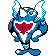

#488
Palafin
WaterFighting
Abilities: Iron Fist, Defiant, Swift Swim
Base stats BST 600
HP100
Attack140
Defense100
Speed90
Sp. Atk95
Sp. Def75
Evolution
Evolves from Finizen — Level 36
Level-up learnset
LevelMoveType
Lv. 1TackleNormal
Lv. 1Water GunWater
Lv. 1Aqua JetWater
Lv. 1Mach PunchFighting
Lv. 5SupersonicNormal
Lv. 10Focus EnergyNormal
Lv. 15Aqua JetWater
Lv. 20CharmNormal
Lv. 22Low SweepFighting
Lv. 25Bulk UpFighting
Lv. 26Force PalmFighting
Lv. 28Work UpNormal
Lv. 30WhirlpoolWater
Lv. 30Brick BreakFighting
Lv. 35HazeIce
Lv. 36Drain PunchFighting
Lv. 38Circle ThrowFighting
Lv. 40Flip TurnWater
Lv. 42Hammer ArmFighting
Lv. 45SurfWater
Lv. 48SuperpowerFighting
Lv. 50Cross ChopFighting
Lv. 56LiquidationWater
Lv. 62Close CombatFighting
Wild locations
Not found in the parsed wild encounter tables.